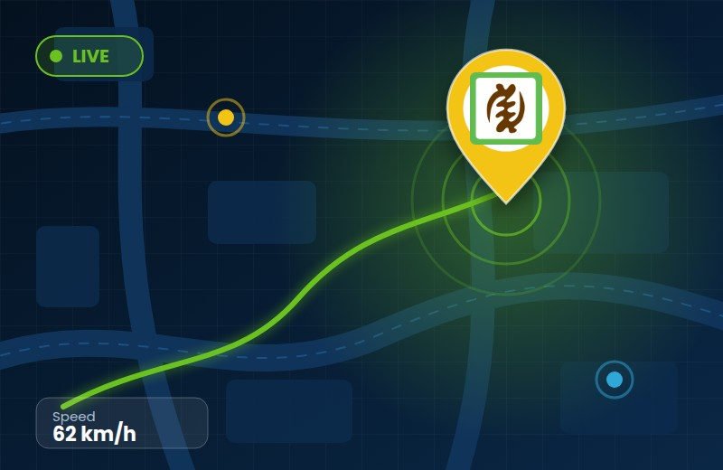
Real-time tracking
View the latest reported position of each vehicle on a map and follow fleet activity from a computer, phone or tablet. Position updates depend on the device reporting interval and mobile network coverage.
One tracking platform for motorcycles, cars, buses, trucks and compatible farm machinery. See vehicle activity, understand fleet performance and make informed decisions from wherever you are.

View the latest reported position of each vehicle on a map and follow fleet activity from a computer, phone or tablet. Position updates depend on the device reporting interval and mobile network coverage.
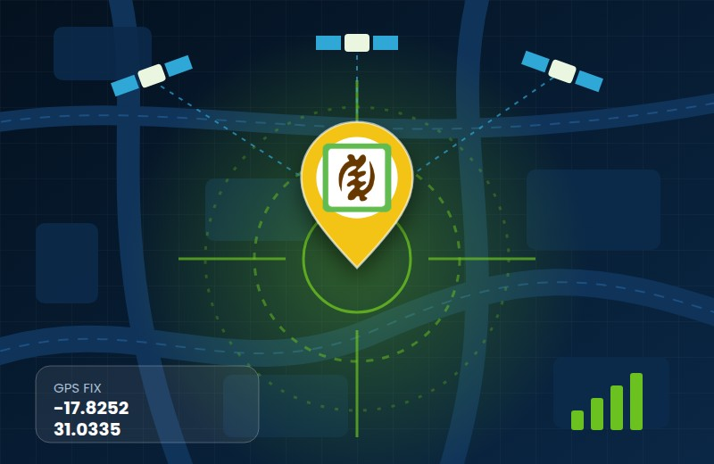
Review GPS position, direction, reported speed and stop activity to understand where vehicles are and how they are being used. Location quality depends on GPS reception, device installation and the surrounding environment.
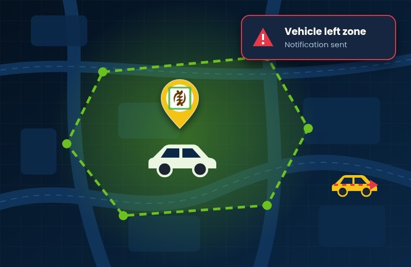
Create virtual boundaries around depots, customer sites, routes or restricted areas. Receive an event when a tracked vehicle enters or exits a zone, helping your team monitor planned movements and site visits.
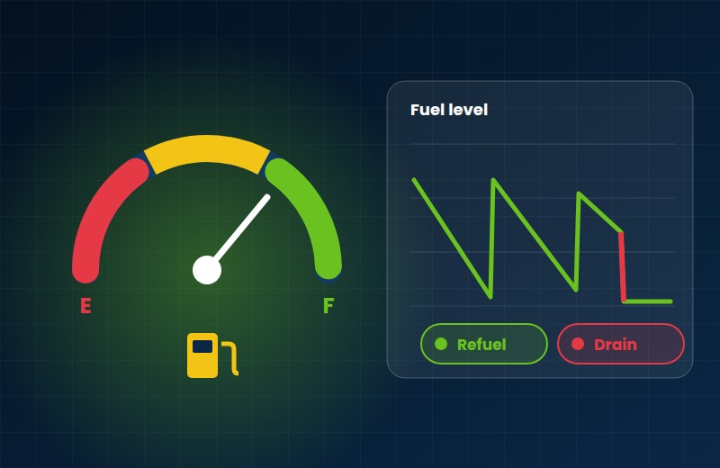
Where a compatible fuel sensor or vehicle data connection is installed, monitor fuel levels and review refuelling or unusual fuel-level changes. Readings depend on sensor type, installation and calibration; availability varies by vehicle.
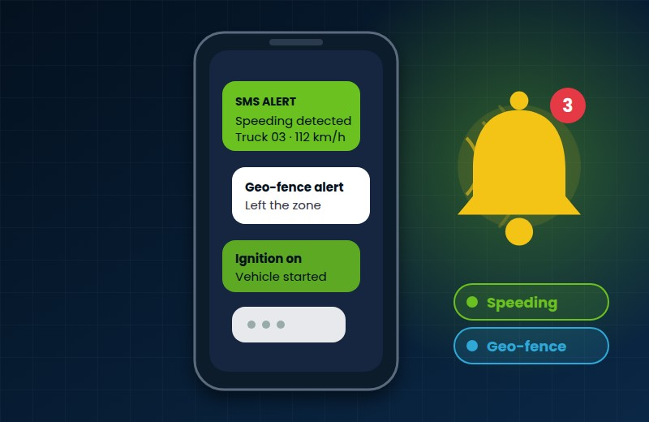
Configure notifications for selected events such as speeding, geofence entry or exit, movement and extended stops. Depending on your setup, alerts can be delivered in the platform or by SMS; SMS delivery depends on network and service availability.
On appropriately equipped vehicles, authorised users can request an engine immobilisation command through the tracking system. This feature requires compatible hardware and professional installation; use it only when the vehicle is safely stationary and you are authorised to do so.
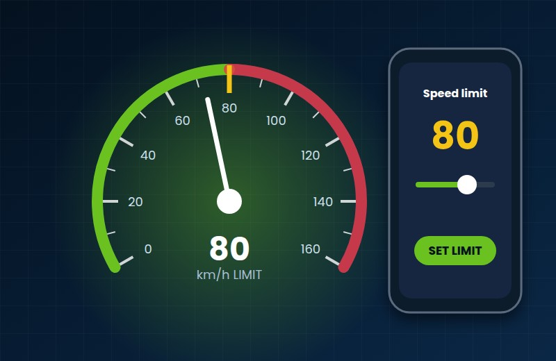
Where supported by the vehicle and tracking equipment, authorised fleet managers can configure speed-related controls remotely. Compatibility and local regulations vary; set limits responsibly and never adjust controls in a way that compromises road safety.
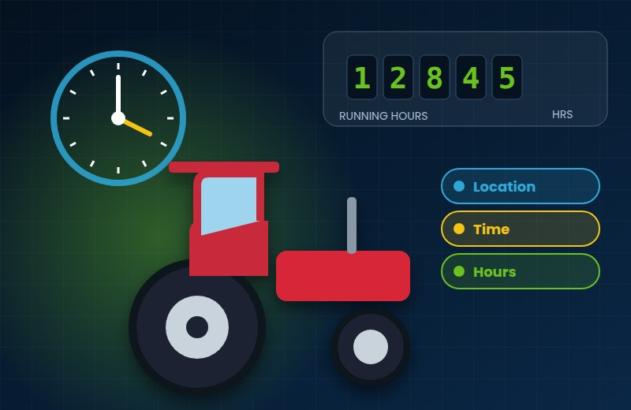
Record engine or equipment operating time using supported ignition, sensor or vehicle data inputs. Running-hour records help businesses monitor utilisation and plan maintenance for tractors, generators and other compatible machinery.
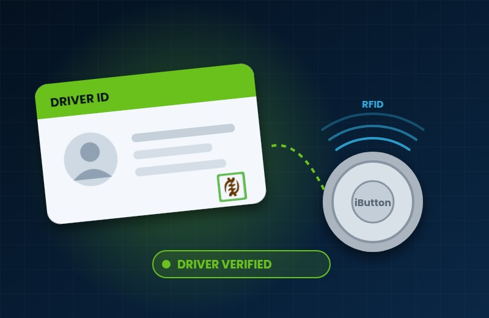
Link journeys to a driver using compatible iButton, RFID or driver-terminal identification. Review driver activity alongside vehicle trips to improve accountability and understand who was operating a vehicle at a given time.
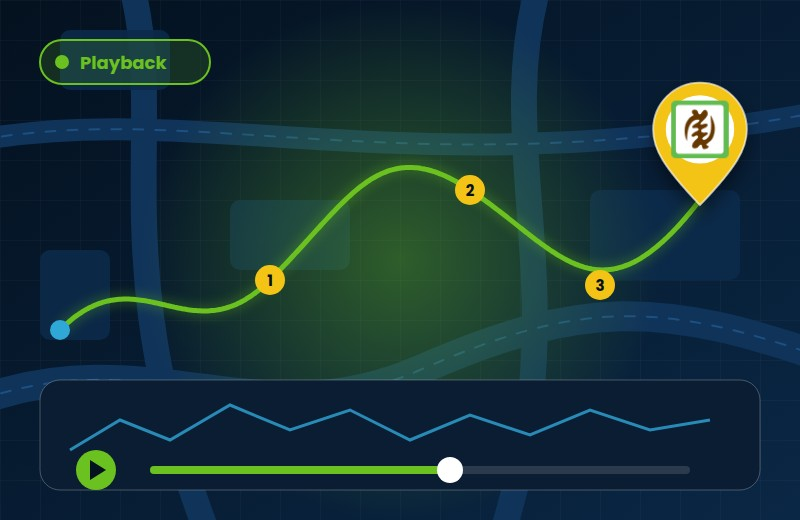
Choose a date range to replay recorded trips on a map and review locations, speed, stops and events. Historical detail depends on device reporting, data retention and the selected tracking plan.
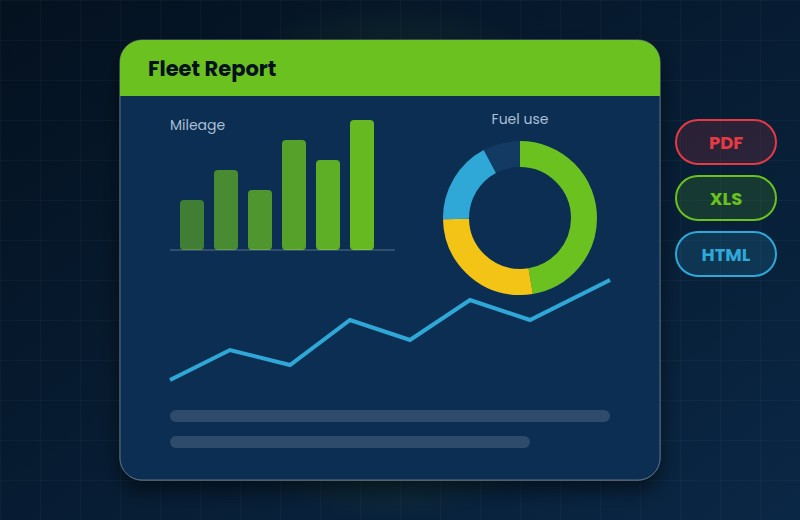
Use trip, mileage, stop, speed, driver and—where compatible fuel data is available—fuel reports to review fleet activity over a chosen period. Reports can support operational decisions and may be exported or scheduled in formats available in your system.
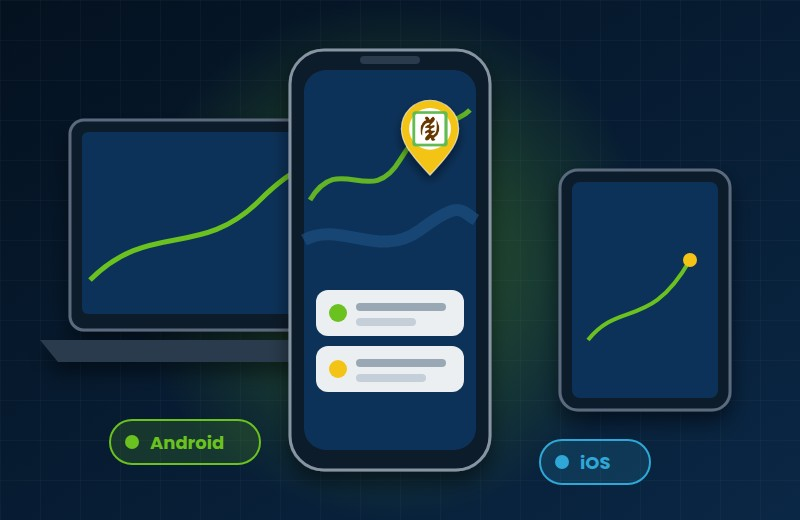
Check your fleet from a supported Android or iOS app, or sign in through a web browser on a computer, phone or tablet. Access to particular functions depends on the user account and configured system.
Connect compatible GPS devices to vehicle data through CAN or supported external sensors. Depending on the vehicle and installation, telemetry can include fuel level, engine RPM, temperature, voltage and other readings.
Compatibility note: Features and data depend on the vehicle, installed tracking device and sensors, network coverage, configuration and selected service. Contact our team to confirm what is suitable for your fleet.
Discuss your fleet